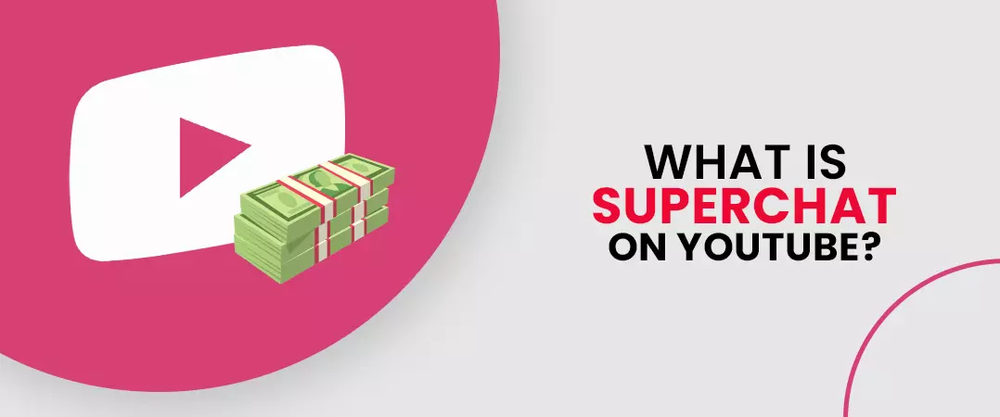
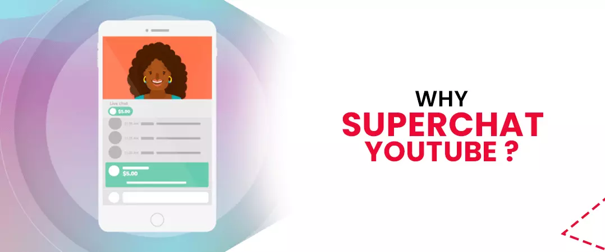
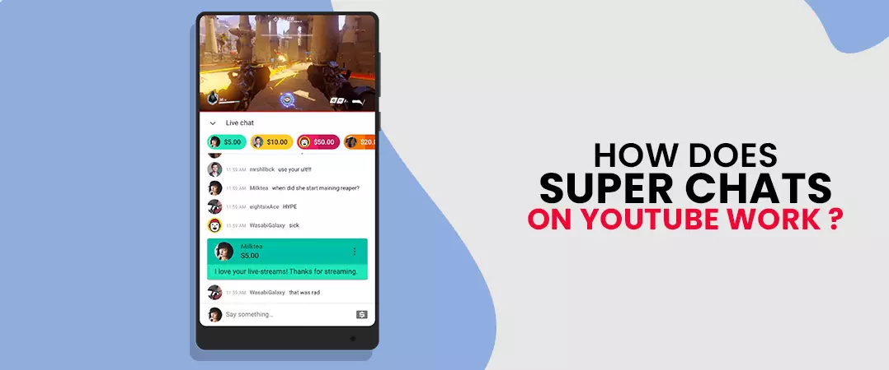
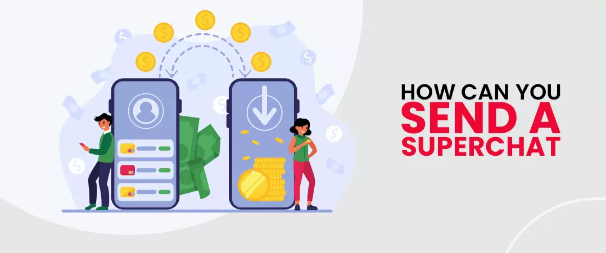
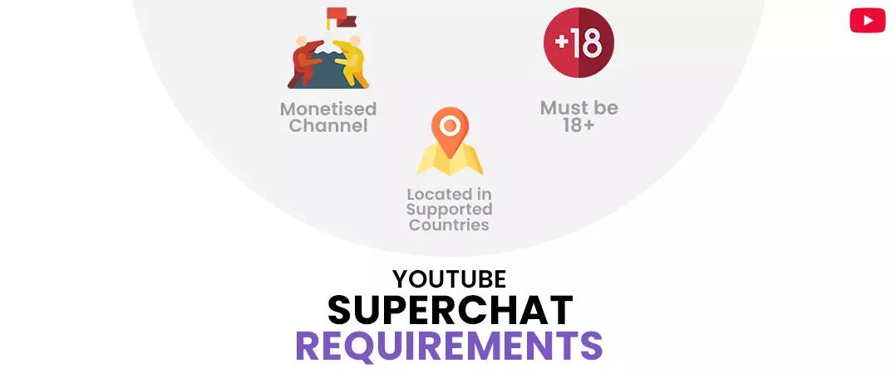
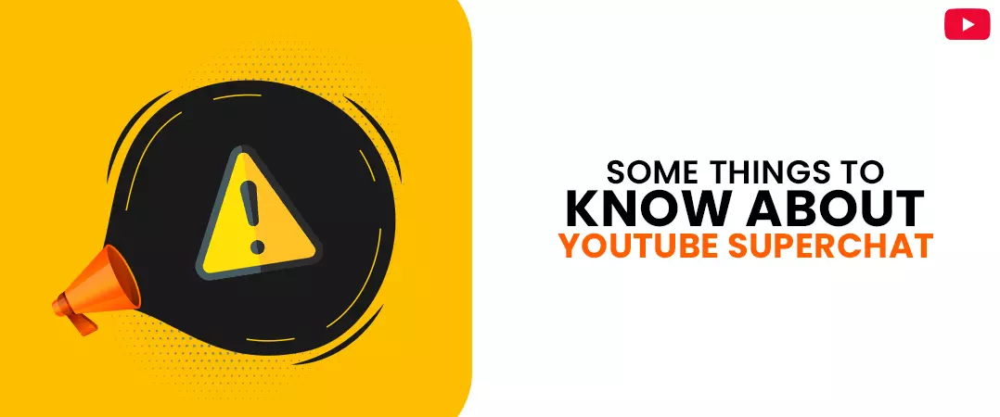
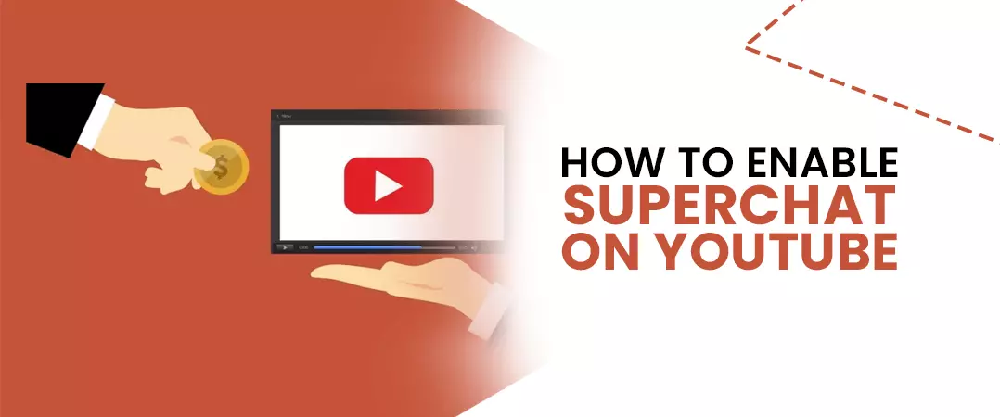
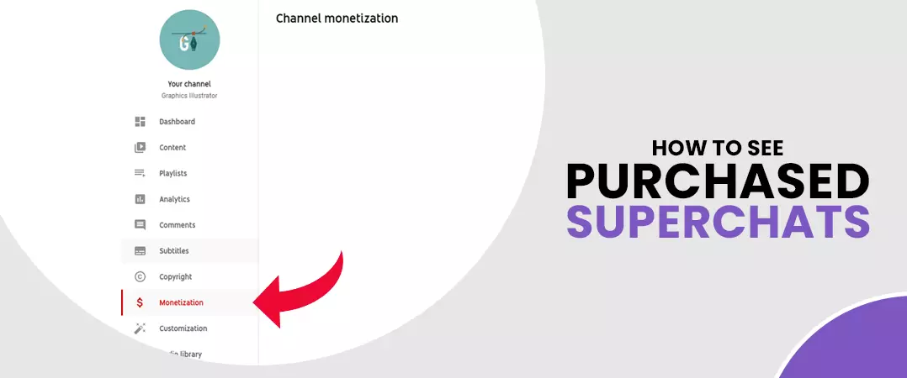

Engagement on a platform like YouTube is vital. That said, let's begin by admitting that the primary reason anyone comes to YT in the first place is to watch videos, engagement, and everything else takes the back seat. A user will leave the platform as soon as they get what they were looking for.
A veteran YouTuber will testify that getting people to interact with you and your videos can prove to be quite a challenge. Hence creators are getting innovative and are coming up with new ways to get visitors to engage. They ask viewers to like, comment, or subscribe to their channel - this practice has been prevalent among most YouTubers.
After all the community-building efforts, what can you do, when you target viewers, finally show interest in you? How do you get them to keep coming back for more?
YouTubers nowadays buy YouTube subscribers, intending to have a strong brand following. But there are other ways as well.
Super chat first came into the limelight in 2017 and has proved to be an additional source of revenue and meaningful interactions.
Let us talk about it in more detail in this article.
Contents
- 1. What Is Super Chat on YouTube?
- 2. Why Super Chat YouTube?
- 3. How Does Super Chat YouTube Work
- 4. How Can You Send a Super Chat
- 5. YouTube Super Chat Requirements
- 6. Some Things to Know About Super Chat
- 7. How to Enable Super Chat on YouTube
- 8. How to See Purchased YouTube Super Chats
- 9. To sum up
What Is Super Chat on YouTube?

Super chat is nothing but a comment that you receive from your audience during a live stream session. You will essentially pin the comment as you go ahead with your broadcast.
The color of the comment and how long it stays pinned will depend on the monetary transaction that happened between you and the commenter. Super chat can be an additional source of revenue for your YouTube channel, don't you think that's great.
We have to understand that engagement is important to grow and build a loyal community , and what is better than getting paid to do just that.
Why Super Chat YouTube?

Let's rephrase the question, shall we? Why are you still not using super chat? - One reason why this platform is loved by so many across the globe is because the video-sharing platform facilitates interaction between audience and creator.
Whoever you may be, whatever you may be doing - super chat will help you engage in effective communication with your audience and grow your brand on YouTube.
Super chat is built into YouTube, which is great because there aren't many who are NOT able to access the platform in this day and age. This means that you already have a high number of potential viewers, you don’t have to try hard to look for them.
This feature is not at all hard to use and is known to facilitate a snowball effect. Meaning, when one person in the audience sends a super chat, others are promoted to follow suit, and this gets the ball rolling - the outcome is just splendid.
How Does Super Chat YouTube Work

Let me help you better understand super chat by creating a real-time scenario.
Let's say you are an admin of a sports channel - specifically football. And you are organizing a live session to discuss the UEFA Champions League final as the events unfold.
There are hundreds of comments in any live stream broadcast, and it is almost impossible to address each of them. Now, if one of your viewers wanted their comment to be seen by others, they would donate, let say, $500 (maximum amount anyone can shell out on super chat). This person's super chat will be visible in your live session for five hours, which is also the maximum time for super chat visibility.
The amount of money you spend is directly responsible for the amount of screen time a super chat receives. So, if you spend $200, your super chat gets 2 hours of exposure—similarly, 1-hour visibility for $100.
Please think of this as an auction, where your audience bid to get their comments featured on your broadcast.
We should all take a moment to appreciate the one who came with the idea of super chat. I mean, look at the multitude of colors that make up different super chats - of course, the color will depend on the donated amount. But the vibrant display of different shades of a rainbow makes super chat hard to miss by our naked eye.
Pro tip: you can block list words that you believe are inappropriate or promote violence or profanity
Also read: How to Drive Traffic to a Website from YouTube
How Can You Send a Super Chat

- Press the Dollar ($) sign next to the emoji option on your comment tab in the live chat. Please note that the visibility of the live stream should be ON.
- Press on 'SUPER CHAT'
- You can specify the amount you would like to spend by manually entering or moving the slider (2$ is the minimum amount and $500 is the maximum).
- You also have an option to insert a message. Please note that for $500, you have 350-character limitations. YouTube will further reduce the limit if you lower your amount. For example, 330 for $400, 290 for $200, and so on.
- Click 'BUY AND SEND'.
Follow the upcoming instructions and finalize your purchase.
YouTube Super Chat Requirements

Are you excited about the prospects of super chat? - well, don't be too quick to jump the gun. You first have to be certain that your channel has met all required criteria for super chat eligibility.
All YouTubers should have or be:
- A channel that is monetized .
- Eighteen years or older.
- A resident of one of the countries where super chat is supported.
Also, note that super stickers and super chats will be unavailable on videos that are marked as.
- age-restricted,
- unlisted or
- Private.
Super Chat and Super Sticker are also inaccessible if the 'Live Chat' is turned off.
Also read: How to rank YouTube videos in 2021
Some Things to Know About Super Chat

Before you go ahead, are some things that require your attention:
- YouTube takes a cut of 30% on your super chat earning.
- Once submitted, super chats cannot be refunded. The donors will receive an email confirming their payment.
- The maximum amount a user can spend on super chats in a single day is $500. Whereas they can spend $2000 a week.
- To collect your super chat funds, you need to integrate your channel with your Google AdSense account.
How to Enable Super Chat on YouTube

Once you meet all the eligibility requirements, you can now move ahead and turn on the super chat feature on your channel.
- First, you have to sign in at YouTube Studio.
- Click 'Monetization' on the left-hand column of your channel dashboard.
- Press Supers, followed by 'Get Started' and follow the instructions that pop up.
- At the end of the instruction cycle, you are presented with two options.
- a)"Super chat status is on."
- b)"Super sticker status is on."
To enable or disable your super chat, you can switch the toggle beside each option.
When you disable your super chat, you have to check the box next to "I understand the implications of this action", followed by clicking 'Turn off'.
How to See Purchased YouTube Super Chats

- Sign in to YouTube Studio
- Click 'Monetization' on the left-hand column of your page.
- Press 'Supers' on the top main dashboard.
- You can review all your purchases in the Your Super Chat and Super Sticker activity section.
- Press 'See all' to check purchase details.
To sum up
YouTube live Super chat not only provides you with additional source revenue, but you can also use this feature to communicate with your target audience. You can utilize the money that you make to produce more videos for your channel. However, you look at it, it's a win for you.
It will help if you notify your audience about the super chat feature. And once you receive your first super chat, you could showcase it on your channel - prompting others to follow suit.
We hope you found our article on YouTube super chat valuable; please check more of our content on our website.
Feel free to share